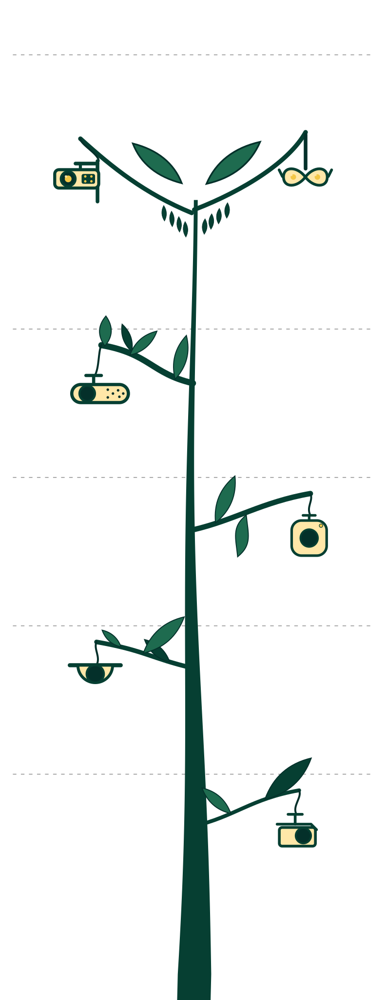

Infographic · 1960s → present
Every way a machine has learned to read a face has, sooner or later, been read back. The tree grows bottom-up: oldest at the roots, each era carrying the camera that enforced it and the intervention that defeated it.
How to read the lenses
“Defeated” means demonstrated against, under stated conditions — not a claim that the technique works against any deployed system today.

play with Ghostmaxxing.
prosthetic, 3d-printed, makeup, glitter, clothing. the quest to find the most effective deceiver. Open the lab ↗
Street pole surveillance
perv glasses
edge AI camera
Dates mark first public demonstration, not deployment. Every era is a documented result under stated conditions — local, conditional and temporary. Read the archive entries.